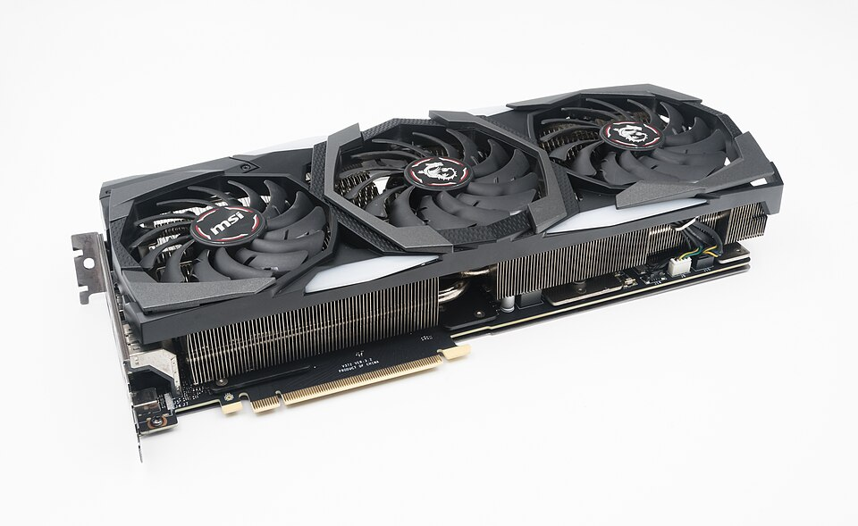

Tarjeta Gráfica: Potencia Visual
Módulo educativo para la infraestructura del computador de desarrollo

¿Qué es?
La Tarjeta Gráfica o GPU es un coprocesador especializado en el procesamiento de gráficos, cálculos matemáticos matriciales y renderizado de imágenes. Puede presentarse de forma integrada (dentro del mismo chip de la CPU) o dedicada (tarjeta PCIe independiente con su propia memoria VRAM).
Función Principal
Calcular las operaciones matemáticas necesarias para proyectar imágenes en una o múltiples pantallas, liberando a la CPU de las tareas intensivas de renderizado geométrico y espacial.
Importancia para la Programación
Para la programación web tradicional (HTML, CSS, JS) o Backend (Java, C#) basta con gráficos integrados. Sin embargo, para el desarrollo de videojuegos (Unity/Unreal Engine), ciencia de datos, aprendizaje automático (IA/Deep Learning) y diseño 3D, una tarjeta dedicada NVIDIA con núcleos CUDA o AMD con ROCm es imprescindible.
Recomendación para Estudiantes ADSO
Si tu enfoque es Desarrollo Web o Móvil, las gráficas integradas de un procesador moderno (ej. AMD Radeon Vega/RDNA) son suficientes. Si planeas explorar Inteligencia Artificial o Desarrollo 3D, se recomienda una GPU dedicada como la NVIDIA RTX 3050 / 4060 con al menos 8 GB de VRAM.
¿Sabías que...?
Las GPUs modernas poseen miles de pequeños núcleos diseñados específicamente para efectuar sumas y multiplicaciones matriciales en paralelo, lo que las hace ideales para entrenar redes neuronales artificiales miles de veces más rápido que una CPU tradicional.